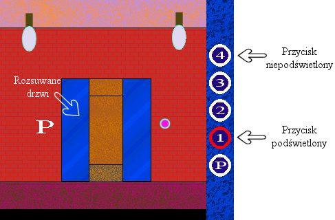

Strona tytu³owa
Opis rozkazów
Styki
Styk zwierny
Styk rozwierny
Cewki
Cewka zwierna
Cewka rozwierna
Cewka zbocze narastaj¹ce
Cewka zbocze opadaj¹ce
Cewka S
Cewka R
Liczniki
Licznik UPCTR
Licznik DNCTR
Timery
Timer ONDTR
Timer OFDT
Timer TMR
Operacje arytmetyczne
Dodawanie ADD
Odejmowanie SUB
Mno¿enie MUL
Dzielenie DIV
Reszta z dzielenia MOD
Pierwiastek SQRT
Relacje
Równy EQ
Nierówny NE
Wiêkszy GT
Wiêkszy równy GE
Mniejszy LT
Mniejszy równy LE
Zakres RANGE
Opis lekcji
Lekcja 1 Wprowadzenie
Pierwszy program
Zasada dzia³ania
Organizacja pamiêci
Obs³uga programu
Pierwsze próby
Lekcja 2 Basen
Lekcja 3 Oran¿ada
Lekcja 4 Pralka
Lekcja 5 Winda
|
|
Lekcja 5
Ostatnia, pi¹ta lekcja jest jednoczeœnie wymagaj¹c¹ najwiêcej przemyœleñ. Zajmiemy siê w niej sterowaniem wind¹ w piêciopiêtrowym hotelu.
Po w³¹czeniu lekcji pi¹tej oczom naszym ukazuje siê hotelowy parter:

Sterowanie wind¹ odbywa siê za pomoc¹ przycisków symbolizuj¹cych piêtra. Po wciœniêciu któregoœ z przycisków, powinien zostaæ on podœwietlony, a winda powinna zamkn¹æ drzwi, pojechaæ na wybrane piêtro, otworzyæ drzwi i wy³¹czyæ podœwietlanie przycisku. Nieskomplikowane, prawda? A co powinno siê staæ, gdy ktoœ wciœnie przycisk podczas jazdy windy na któreœ piêtro? Uwzglêdnienie wszystkich przypadków jest prawdziwym wyzwaniem i potrafi¹ to tylko najlepsi. Czy ty jesteœ jednym z nich?
Do sterowania ca³ym systemem dostêpne mamy nastêpuj¹ce wejœcia i wyjœcia:
- Wejœcia odpowiadaj¹ce przyciskom przywo³ania windy. Ka¿dy z przycisków, po wciœniêciu, daje na odpowiadaj¹cym mu wejœciu jedynkê tylko na jeden cykl pracy sterownika. Przyciski dostêpne s¹ jako PRZYC_P, PRZYC_1, PRZYC_2, PRZYC_3 i PRZYC_4.
- Wyjœcia odpowiadaj¹ce ¿arówkom pod przyciskami. Ustawienie na danym wyjœciu jedynki powoduje podœwietlenie odpowiadaj¹cego przycisku. Œwiate³ka dostêpne s¹ jako SWIAT£O_P, SWIAT£O_1, SWIAT£O_2, SWIAT£O_3 i SWIAT£O_4.
- Wyjœcia steruj¹ce drzwiami na ka¿dym piêtrze. Zero na danym wyjœciu powoduje zamykanie drzwi, jedynka - ich otwieranie. Ich oznaczenia to odpowiednio dla ka¿dego z piêter DRZWI_P, DRZWI_1, DRZWI_2, DRZWI_3 i DRZWI_4.
- Dwa wyjœcia steruj¹ce ruchem samej windy. Jedno z nich, oznaczone WIND_RUCH, wybiera, czy winda stoi (zero), czy jedzie (jeden). Drugie, oznaczone WIND_KIER, steruje kierunkiem ruchu windy. Zero to ruch w dó³, jeden to ruch w górê.
- Jedno wejœcie analogowe (CZUJ_WYS) pozwala na odczyt aktualnego po³o¿enia windy. Odleg³oœæ miêdzy piêtrami wynosi dok³adnie 320 jednostek. 0 oznacza wiêc parter, 320 pierwsze piêtro, 640 drugie itd. Wartoœci poœrednie oznaczaj¹, ¿e winda znajduje siê miêdzy piêtrami.
Nasze zadanie ju¿ znamy - nale¿y tak oprogramowaæ sterownik, aby winda zachowywa³a siê jak prawdziwa. Oczywiœcie nie oprogramujemy ca³ego jej zachowania od razu. Krok po kroku dodamy wiêcej funkcji.
|